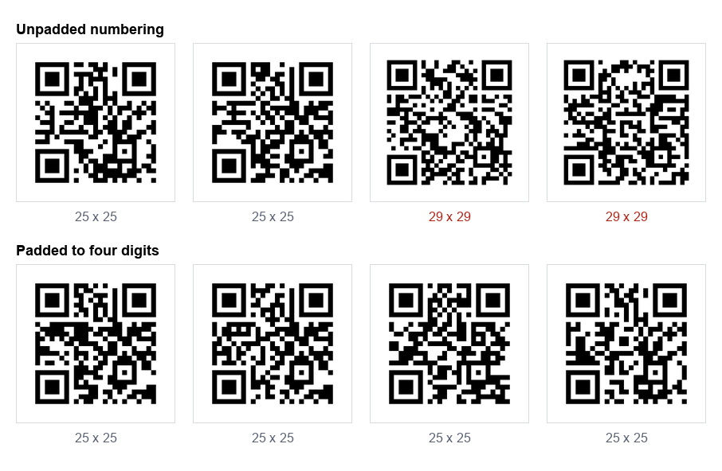

Table numbers for a restaurant. Asset tags for a maintenance team. Seat codes for a venue. Unique links on a thousand product inserts. These jobs all start the same way: a list goes in, a folder of images comes out, and the folder goes to a printer.
We generated 500 codes to find out what actually goes wrong at that scale. Three things did, and the first one is invisible until the codes are printed and laid out on a sheet.
The numbering trap
Here is the finding that matters most, and it has nothing to do with QR codes being difficult.
QR codes come in fixed version steps, not a smooth scale. Add one character to your data and usually nothing happens, but occasionally the code jumps to the next version and gains four modules on every side. In a batch numbered sequentially, that jump happens partway through the list.

| URL | Chars | Grid |
|---|---|---|
https://example.com/t/1 | 23 | 25 x 25 |
https://example.com/t/9999 | 26 | 25 x 25 |
https://example.com/t/10000 | 27 | 29 x 29 |
https://example.com/t/20000 | 27 | 29 x 29 |
One extra digit and the grid grows by 16%. Print that batch at a fixed 20 mm square and the codes after 9999 have visibly smaller modules than the ones before it, which means they scan less well in exactly the same conditions. Nobody notices until someone complains that "some of the table cards do not work".
The fix costs nothing. Pad your numbers to a fixed width before you generate. Use /t/0001 rather than /t/1. We regenerated the same 500 code batch with four digit padding and every single code came out 25 by 25, so a single print size works for the whole run.
The same logic applies to any varying field, not just numbers. If half your codes carry a short product name and half carry a long one, the batch will not be uniform. Decide the longest value first and check that one.
SVG or PNG for a print run
We measured both, at the sizes a print job actually needs:
| Output | One code | A batch of 500 |
|---|---|---|
| PNG, 256 px | 3.5 KB | 1.7 MB |
| PNG, 512 px | 14.5 KB | 7.1 MB |
| PNG, 1024 px | 41.1 KB | 19.7 MB |
| PNG, 2048 px | 116.0 KB | 56.6 MB |
| SVG | 17.6 KB | 8.4 MB |
SVG is less than half the weight of a print resolution PNG, and unlike the PNG it has no resolution at all. The same file prints crisply on a business card or a shop window. For anything going to a designer or a printer, SVG is the right answer and it is not close.
PNG earns its place in two situations: when the code is going into something that cannot take vector art, such as a spreadsheet, a label printer's own software or an email, and when you want to look at the batch quickly without opening design software.
One thing not to do is export small PNGs to keep the folder tidy. A 256 px PNG is 3.5 KB and looks fine on screen, and it will be upscaled by the printer into something soft. Our scan limits test found blur is what kills codes, and upscaling a small PNG is a way of manufacturing blur.
The characters that break a batch
We ran a list of awkward inputs through our own bulk tool to see what survived a round trip. Most things did. Commas, quotes, ampersands in query strings, semicolons, backslashes and a 200 character URL all came back exactly as they went in.
Two things did not, and both are worth knowing about whatever tool you use:
- Characters outside plain ASCII. Accented names, non Latin scripts and emoji are encoded as multiple bytes, and a generator that assumes one character is one byte will mangle them. This is not theoretical: it was true of our own tool until this test found it, and it is why we now encode as UTF-8 everywhere and say so.
- Leading and trailing spaces. A stray space copied from a spreadsheet becomes part of the data. Most tools trim it, ours included, but not all do, and a URL with a space in front of it will not open.
If your list contains a single accented name, generate that one first and decode it before running the other 499.
Verify the whole batch, not a sample
The usual quality check on a batch is to scan two or three codes with a phone and assume the rest are fine. That catches a broken generator. It does not catch the error that actually happens, which is a row being wrong in the source list.
A wrong row produces a perfectly valid QR code pointing at the wrong thing. It scans beautifully. You find out when a customer lands on table 47's menu at table 12.
The check that catches it is to decode every image and compare the result against the line it came from. That is what we do to our own generators before publishing anything, and it is the only reason we trust the numbers in these articles. If you are producing a batch for a client, it is worth the twenty minutes.
For a single code, our scanner shows you exactly what is inside before you commit, and the stress test shows how much abuse it tolerates.
Naming the files so the printer can use them
A folder of 500 files called qr-code.png, qr-code-1.png and so on is a problem for whoever has to lay them out. Useful names:
- Name each file after the thing it identifies, not its position in the list.
table-0012.svgbeatscode-12.svg, because the layout person can match it to the artwork without counting. - Pad the numbers here too, so files sort correctly. Without padding, most systems sort 10 before 2.
- Avoid spaces and punctuation in file names. They survive a zip but not always a design tool's import.
- Keep the source list with the folder. When someone later asks which code went on which card, the list is the answer and it is always lost.
Our bulk generator names files from the content of each line and exports the batch as a zip of SVGs, a zip of PNGs, or a PDF sheet for printing directly.
A checklist before you send the run
- Numbers padded to a fixed width, so every code in the batch is the same grid size.
- The longest value in the list checked, because it sets the size everything else must match.
- Any accented or non Latin entry generated and decoded first.
- SVG for the printer, PNG only where vector cannot go.
- Every image decoded and compared against its source line.
- One code printed at the real size, on the real stock, and scanned by a phone that is not yours.
Step six catches things the other five cannot, including paper that is too glossy and a print size decided on screen. Our sizing guide covers how to pick that size from the scanning distance.
How we tested this
- 500 sequential URLs of the form
https://example.com/t/0001, generated with our own bulk tool in the browser, at error correction level M. - Grid sizes read from the encoder rather than measured off an image, so they are exact.
- File sizes measured from the tool's own output, PNG at four sizes and SVG, then multiplied across the batch.
- Twelve awkward inputs covering accents, Japanese, emoji, commas, quotes, ampersands, semicolons, backslashes, leading spaces and a 200 character URL, each decoded back and compared character by character.
The honest limit: this is a software test of the files, not of printing. It tells you which files are correct and which will be uniform. It cannot tell you how your printer's ink behaves on your stock, which is why the last item on the checklist is a physical test.
The summary
Bulk QR generation is not hard. The failures are mundane: a numbering scheme that changes the code size partway through, small PNGs upscaled into blur, an accented name silently mangled, and one wrong row in the source list that produces a perfect code pointing at the wrong place.
Pad your numbers, export SVG, and decode every single one before it goes to print. The first two take a second. The third is the only check that finds the error that actually costs money.
Our bulk QR code generator takes a list, previews every code, and exports the batch as SVG, PNG or a PDF sheet. Like everything here it runs in your browser, so the list never leaves your machine.